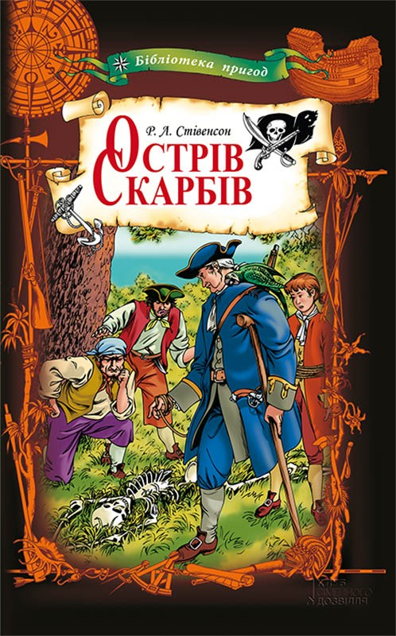
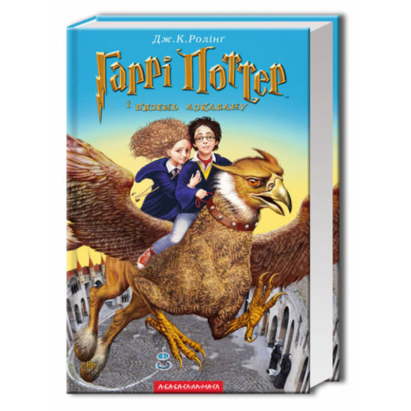
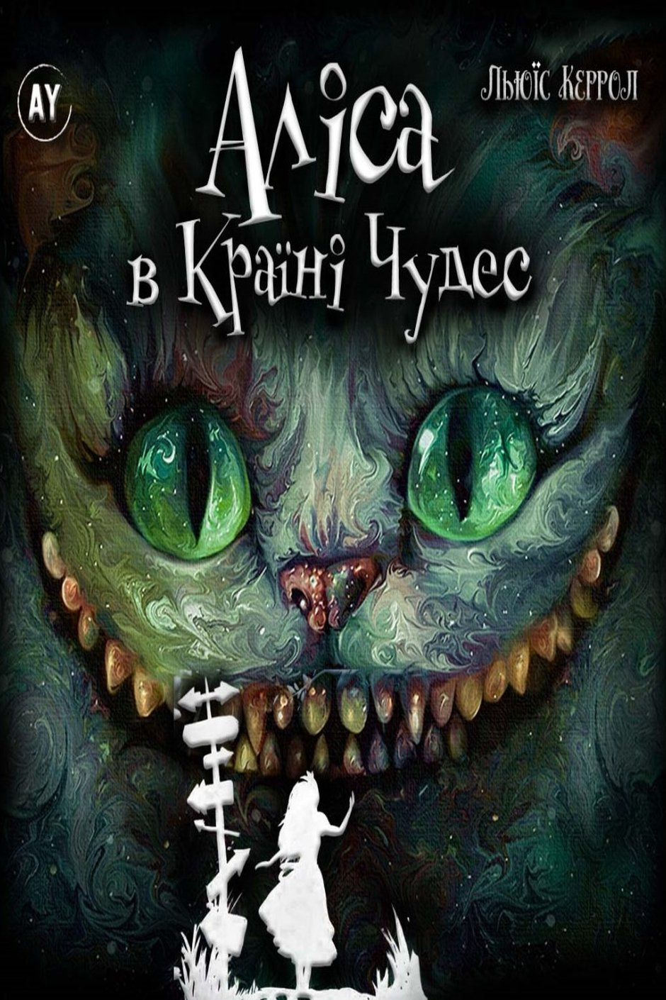

Про нас
Ласкаво просимо до онлайн-бібліотеки «Книжковий Рай»!
Популярні книги місяця

«Острів Скарбів»
Пригодницька історія про пошуки піратського золота, небезпечні морські мандрівки та справжню сміливість.

«Гаррі Поттер»
Дивовижна та магічна історія про школу чарівництва, справжніх вірних друзів та боротьбу добра зі злом.

«Аліса в Країні Див»
Неймовірна фантастична подорож крізь кролячу нору у світ, де повністю відсутні звичні закони логіки.
Зворотний зв'язок
Якщо у вас є пропозиції щодо додавання нових цікавих творів у наш «Рай», пишіть на адресу засновника:
📧 Електронна скринька: info@bookparadise.ua